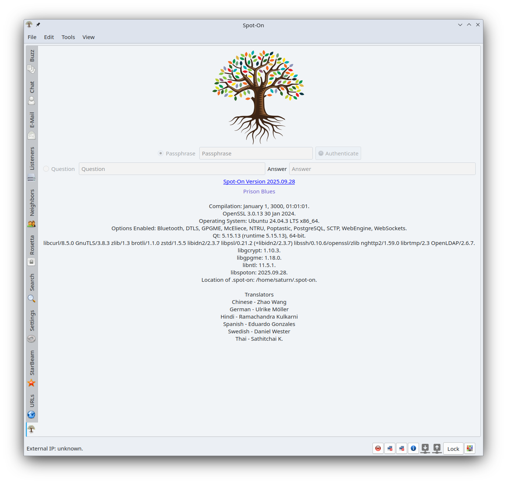

Spot-On
Echo Communications Software

Spot-On 2025.05.12
Welcome to the 2025.05.12 release of Spot-On. Corrections and
new features are detailed below.
- Another Blue-Balloon-Papa release!
- GCrypt 1.11.1; Windows. Corrects 2024.12.25 item.
- GPGError 1.55; Windows.
- New page Rosetta.
- Removed the menu View -> Pages.
Spot-On 2025.04.25
Welcome to the 2025.04.25 release of Spot-On. Corrections and
new features are detailed below.
- Another Blue-Balloon-Papa release!
- Avoid cloning a GIT repository's history for Prison
Blues.
- GPGError 1.53; Windows.
- Richer Prison Blues process messages in status bars.
Spot-On 2025.04.18
Welcome to the 2025.04.18 release of Spot-On. Corrections and
new features are detailed below.
- Allow renewal of the Web Server's certificate.
- Application-modal progress dialogs.
- Center child windows before displaying these windows.
- Define QT_QPA_PLATFORMTHEME as qt6ct in spot-on.sh if qt6ct
is discovered.
- Display a warning in the status bar if Web Server credentials
cannot be recorded.
- Exit once and only once. Closing a program is a serious
calamity.
- Fortuna in the main interface.
- If Fortuna cannot provide the requested number of random
bytes, query GCrypt.
- New Options -> Settings -> OpenSSL.
- New PRISON_BLUES_REMOTE_SERVER Options -> Miscellaneous.
Incomplete.
- On Spot-On reset, launch a new process before exiting the
current process.
- On-top chat dialogs are now available everywhere.
- OpenSSL credentials will now be generated via the defined
OpenSSL executable. The new approach will replace the
monumental effort of maintaining correct and current
OpenSSL library processes. Temporary files will be temporarily
housed in the Spot-On directory. If the new process fails,
the traditional process will resume.
- Participant SMP secrets are now recorded in
friends_public_keys.db and will be available in future
sessions.
- Removed creation of the WebEngineCache directory.
- Removed database alter statements
(ALTER TABLE neighbors ADD ssl_configuration TEXT).
- Replaced Options -> Miscellaneous text widget with a lovely
table widget.
- Super OpenSSL 3.5; Windows. The new version includes PQC.
- The Blue-Balloon-Papa release!
Spot-On 2025.03.23
Welcome to the 2025.03.23 release of Spot-On. Corrections and
new features are detailed below.
- Removed custom style sheets.
- Replaced Options -> Theme with Theme Override.
- Timely Rosetta, if timeliness is timely.
Spot-On 2025.03.20
Welcome to the 2025.03.20 release of Spot-On. Corrections and
new features are detailed below.
- Layout modifications of the main interface.
- New E-Mail -> Plain. The option allows for plain-text
or rich-text e-mail display. The new widget is positioned
below the e-mail message and may require interaction with the
parent splitter before it's visible.
- New FORTUNA_FILE option. Initialized as none. On Unix
systems, /dev/urandom is a possibility.
- Reset s_kernel as nullptr after deletion.
- The method spoton_kernel::interfaces() is now lock-less.
Super fast and super safe.
Spot-On 2025.03.01
Welcome to the 2025.03.01 release of Spot-On. Corrections and
new features are detailed below.
- Added GCRY_SEXP_BUILD_HASH_ALGORITHM_STRING to
Options -> Miscellaneous. The algorithms allowed are
BLAKE2B_512, SHA3-512, SHA512, STRIBOG512, WHIRLPOOL.
Participants must specify common values which are supported
on all systems.
- Decreased frequency of spot-on-git.sh processes.
- Default buttons of No in Rosetta prompts: removal of
GPG keys, removal of contacts.
- Disable native dialogs.
- Fortuna and SHA3-256.
- Forward-only SQL queries. Conserve resources.
- GIT and congestion control within the kernel.
- Icons here and there.
- Ignore file permissions during the processing of local
Prison Blues files.
- Keys and values in Options -> Miscellaneous are now
trimmed.
- OpenSSL 3.4.1; Windows.
- Optional removal of participant GPG keys from the key ring
via Rosetta.
- Populate Rosetta -> GPG Messaging contacts after a
participant is removed.
- Prison Blues now supports five sites. Please see Options.
Previous settings will be removed. Apologies.
- Process all errors in
spoton_crypt::decryptedAfterAuthenticated().
A keyed-hash failure was not observed.
- Qt 6.8 LTS.
- Replaced file socket notifier with timer in Fortuna.
- Rosetta: include the recipient's public-key digest
in the digital signature.
- Set the parent of spoton_virtual_keyboard created in a
spoton_lineedit to the provided parent instead of the
spoton_lineedit object. Otherwise, the clear-button will not
be shown.
- Single-set spot-on-git.sh process(es). If a kernel process is
active, the interface will not launch separate spot-on-git.sh
process(es) automatically.
- The function gcry_cipher_reset() may fail.
Spot-On 2025.02.05
Welcome to the 2025.02.05 release of Spot-On. Corrections and
new features are detailed below.
- Added the option GPGME_ENCRYPT_NO_COMPRESS in
gpgme_op_encrypt_sign(). Do not compress a message.
- Added the option GPGME_ENCRYPT_THROW_KEYIDS in
gpgme_op_encrypt_sign(). Hide the recipient.
- Be careful of zero objects: spoton_rss::slotItemChanged().
- C++ enumerator classes.
- C++ nullptr replaces zero.
- Disable WebGL for WebEngine.
- Display SMP step numbers in Chat messages.
- GPG messaging on the GIT blues. Please read Rosetta.
- GPGME and MacOS.
- GPGME and Windows. Not verified. Someday!
- Message boxes replaced with status-bar messages in
Rosetta.
- New Iteration Count of 250000 in Settings -> Passphrase.
New installations only.
- New Reset buttons for Listener and Neighbor pages.
- Prison Blues. Communications via GIT. Please read the
documentation. SMP blues, also.
- Process configuration settings in the kernel after
the security containers have been initialized.
- Removed NTL for local Unix project files, save for PowerPC.
Systems must believe in maintainers. See YOU!
- Replaced C-style casts with modern versions.
- Retain the GPG passphrase in Rosetta. Optional. New
Rosetta -> Edit -> Remove Stored INI GPG Passphrase. The
passphrase is not re-encoded during the re-encode process.
- Speedier detection of active kernel in the interface.
- Spot-On-Lite will address Prison Blues and Smoke.
- Trim Buzz and Chat messages.
- WebEngine: cache-path, download-path, and
persistent-storage-path are now /dev/null for all systems.
Spot-On 2024.12.25
Welcome to the 2024.12.25 release of Spot-On. Corrections and
new features are detailed below.
- Adaptive Echo tokens will now be trimmed.
- Allow comments (#) in Options -> Miscellaneous. An entry
is considered a comment if the first character in it is
a number sign. Deeper symbols are not interpreted.
- Attempt to load translation files according to
QTranslator::load(QLocale(), "qtbase", "_", path, ".qm") and
QTranslator::load(QLocale(), "spot-on", "_", path, ".qm").
- Automatics and constants. Mishaps? We simply do not know!
- Beautiful and final LTS release of 2024. See you.
- Beautiful and natural find in various places.
- Beautiful lively documentation in the various panels.
- Beautiful source!
- Breeze style on Unix-like, excluding MacOS.
- Centering children with parents is strange. Introduced
a delayed and simple centering machine. The delay is not
observable by a standard person.
- Close the RSS panel before deleting it as this will
preserve its geometry.
- Completed some of spoton_smpwindow::slotSetIcons().
- Corrected access of the URLs database in the kernel.
QSqlDatabase::connectionName() is not
QSqlDatabase::databaseName(). The error may result in
lingering database connections.
- Corrected Windows project file. Deleting debug plugins may
delete required plugins files in the Windows install target.
Qt 6.5 LTS has separated the debug and release files and the
additional logic in the project file is not necessary.
- Corrected incorrect error report in spoton_crypt::init().
- Corrected interface and kernel RSS: place the original URL
into the redirected URL database field
(rss_feeds_links database table) as the redirected URL is the
URL which determines if its contents should be imported. If
the original URL is redirected, the redirected URL field will
be correct. Excellent!
- Editable RSS feeds. Double-click the desired feed,
modify its link, and press the Enter key.
- Eliminated GitHub warnings of NTRU.
- Enable Monitor Events in Notifications window after a new
installation. The default value is true.
- Final release of Linux packages. Future: MacOS, Windows.
See YOU!
- GCrypt 1.11.1; Windows.
- GPGError 1.51; Windows.
- Import published pages. Options -> Miscellaneous. Importing
occurs routinely.
(PUBLISHED_PAGES := path, title-line-number, url-line-number)
- Inbound e-mail will be displayed in a plain-text container,
replacing the rich-text widget. Rich-text is not suitable
for Qt.
- Include discovered Spot-On options in About page.
- Increased GEMINI_ITERATION_COUNT to 250000 from 25000. This
constant is applied during the creation of credentials
from a completed SMP process.
- Increased MAXIMUM_NEIGHBOR_CONTENT_LENGTH to
MAXIMUM_NEIGHBOR_BUFFER_SIZE / 2.
- Introduced SPOTON_MACOS_OVERRIDE_NEIGHBOR_DELETE_LATER in
the kernel. Disabled.
- Listener accounts and passwords will now be trimmed.
- Monitoring the INI file in the kernel may not be possible
with a file-system monitor. Enable periodic monitoring if
necessary.
- More statistics in local format.
- Natural woody: collapse / expand are more clever.
- New --launch-kernel main interface terminal option.
This option does not share credentials with a kernel process.
The kernel is launched shortly after the main window is
shown.
- New About page in Web search.
- New Reset All in Search page.
- New congestion control digest: SHAKE256. Requires GCrypt.
- New modern C++ nullptr, here and there.
- Novas will now be trimmed.
- On reset confirmation dialog, set No as the default
button.
- OpenSSL 3.4; Windows.
- Optional human proxy. Please see Chat page.
- Prettier about text in search server.
- Prettier tool buttons on MacOS. Menu arrows were quirky.
- Q_OS_WIN -> Q_OS_WINDOWS.
- Qt 6.8 LTS.
- RSS: Edit -> Find -> Timeline.
- RSS: bold labels for lovely meaning.
- RSS: describe reason(s) of disabled widget(s).
- RSS: new verify-feeds machine.
- Rapid McEliece.
- Removed Doxygen.
- Removed GeoIP from MacOS, PiOS, and PowerPC. GeoIP is dead!
- Removed echo_key_sharing_secrets_temporary from
echo_key_sharing_secrets.db as the requirement is ancient.
- Removed old database ALTER statements.
- Renamed FORTUNA_QUERY_INTERVAL_MS to
FORTUNA_QUERY_INTERVAL_MSECS. Please adjust in Options ->
Miscellaneous.
- Renamed P2P_SERVERLESS_CONNECT_INTERVAL_MS to
P2P_SERVERLESS_CONNECT_INTERVAL_MSECS. Please adjust in
Options -> Miscellaneous.
- Replaced selectedItems() with a model's selectedRows().
Super fast, super splendid, super Spot-On.
- Resize a dialog before centering it.
- Replaced old-style C casts.
- Select the Breeze style on KDE systems in spot-on.sh.
- Set QMAKE_MACOSX_DEPLOYMENT_TARGET to 12.0.
- Spot-On contains at least 740 options.
- Spot-On kernel uptime in About page in Web search.
- Taller windows: Documentation, Options, Release Notes,
Log Viewer.
- The method gcry_mpi_scan() may fail in
spoton_smp::setGuess(). Be careful!
- The method spoton_listener::maxPendingConnections() may
return a special value, indicating that a listener has not
completed initialization. Adjusted logic.
- Total URLs in About page in Web search.
Spot-On 2024.07.15
Welcome to the 2024.07.15 release of Spot-On. Corrections and
new features are detailed below.
- A StarBeam's estimated time of arrival is now displayed as a
rational. GitHub ticket #34.
- A StarBeam's percent completed is now displayed as a
rational. GitHub ticket #34.
- About the 88th release of Spot-On.
- Adjusted QString::split() for modern Qt versions.
- Corrected INI setting kernel/tcp_nodelay in
spoton_gui_server_tcp_server::incomingConnection(); the proper
setting name is gui/tcp_nodelay.
- Disable WebEngine's cache if SPOTON_WEBENGINE_ENABLED is
true.
- Do not set an empty URL interceptor for WebEngine as the
engine is particular.
- Elegant source.
- Fourteen years of silent awesomeness.
- GPGError 1.50; Windows.
- Include urls.db in database vacuuming. New confirmation
prompt included.
- NTRU memset() size parameter correction; size must be
non-zero. Please read line 506 of src/poly.c. Notice that
the len parameter is an unsigned 16-bit integer.
- Non-modal About dialog.
- OpenSSL 3.3.1; Windows.
- Prepared for Apple Silicon MacOS. Intel MacOS is deprecated.
- QLocale::country() was replaced with QLocale::territory() in
Qt 6.6.
- Qt 6 LTS and WebEngine preparations.
- Qt 6 LTS and deprecated SSL corrections.
- Removed ancient QSettings::remove() instances.
- Removed deprecated QAction objects.
- Removed tool tips from StarBeam -> Transmitted -> Add
Mosaic.
- Replaced QWebEngineSettings::globalSettings() with
QWebEngineSettings::defaultSettings().
- Simplified StarBeam reading. Reading tasks are cumbersome.
- Some QDateTime::setTimeSpec(Qt::UTC) instances are redundant.
Removed!
- Source-only releases! Computers do not exist.
- The method spoton_webengine_page::acceptNavigationRequest()
must return true else a local page will not be loaded.
- This happy release is dedicated to the spotty Mr. D.
- Ultra StarBeams were introduced in 2019 or so. Perhaps
earlier, perhaps later. Ultra StarBeams are reliable and
therefore resize() is not necessary.
- Unroll loops, if possible, via funroll-loops.
- Various tool tips in StarBeam -> Transmitted would disappear
if
an active StarBeam was present: QTableWidget::selectRow().
- View Locally is now hidden in Search unless WebEngine or
WebKit is available.
- WebEngine is now included in some Linux distributions.
The engine will render local Web pages.
Spot-On 2023.12.15
Welcome to the 2023.12.15 release of Spot-On. Corrections and
new features are detailed below.
- Calm integration of an Arduino entropy source.
- Corrected conditional compilation in
spot-on-socket-options.cc:
#if SPOTON_SCTP_ENABLED must be #ifdef.
- Deactivate the kernel's RSS timers on termination. Timers
are usually deactivated automatically.
- Final 2023 LTS release! See you.
- First PiOS 64-bit release!
- Fortuna. New Miscellaneous options. If data are not available,
gcrypt is utilized.
- GCrypt 1.10.3; Windows.
- LTS release! Included are a bunch of bunched bundles.
- Meaningful tool tips. Example, [10, 20] for numeric ranges.
- OpenSSL 1.1.1w; MacOS.
- Optional Bluetooth and WebSockets on FreeBSD and Linux.
- Optional CURL (Poptastic) on Linux.
- Optional GeoIP on Linux. GeoIP is deprecated!
- Optional McEliece (NTL) on Linux. NTL appears abandoned.
- Optional PostgreSQL on Linux.
- Optional SCTP on Linux.
- Qt 6.5.3 LTS on MacOS.
- Qt 6.5.3 LTS on Windows.
- New kernel options for energy conservation.
- Process the INI file in the kernel shortly after launch.
- Removed libspoton requirement.
- Speedier Web server: if socket data are available,
avoid pausing and process the data!
- The NTL and NTRU libraries appear abandoned!
- Windows 11 x86-64.
- Write downloaded Web content to a specified directory. Please
see Miscellaneous in Options.
Spot-On 2023.08.05
Welcome to the 2023.08.05 release of Spot-On. Corrections and
new features are detailed below.
- Archived GB project files.
- Archived OpenBSD project files.
- Deprecated support for Windows: GPGME, GeoIP, PostgreSQL,
cURL. Twelve years of effort, zero client interest. Other
operating systems are beautifully functional with near-zero
effort.
- Do not launch an elevated version of ShellExecuteA() on
Windows.
- Initialize s[i] in Threefish implementation.
- Qt 5.15.10 LTS; MacOS.
- Qt 6.5.2 LTS for Windows x86-64!
- Release includes a bunch of accumulated bundles!
- Removed CURL from MacOS build. Item is not included with
some release notes and will be included in future releases.
- Unix-like distributions: prefer /opt instead of /usr/local.
Please ignore on MacOS.
- Windows x86 is deprecated by Microsoft.
Spot-On 2023.05.15
Welcome to the 2023.05.15 release of Spot-On. Corrections and
new features are detailed below.
- Replaced the error() signal with errorOccurred() in numerous
instances for Qt 5.15 LTS and newer. Networking-related
classes.
- Source-only release.
Spot-On 2023.05.10
Welcome to the 2023.05.10 release of Spot-On. Corrections and
new features are detailed below.
- Archived release notes.
- C++17.
- CURL 8.0.1; Windows.
- Center progress dialog of slotPrepareUrlDatabases().
- GPGError 1.47; Windows.
- Launch Spot-On in a dark mode, if available, on Windows.
Please see spot-on-darkmode.bat.
- Minimal Spot-On. Retain setting.
- Native dialogs and menus.
- New splash screen!
- Open Listeners and Neighbors pages if status-bar widgets
are activated.
- OpenSSL 1.1.1t; MacOS.
- OpenSSL 1.1.1t; Windows. New download site
https://download.firedaemon.com/FireDaemon-OpenSSL.
- Proper size policy of passphrase_frame widget in the Wizard.
- Qt 5.15.8 LTS; MacOS.
- Qt 6.5 LTS compliant.
- Removed algorithm examination during launch. Decreases
processing time.
- Removed vertical headers from table widgets.
- SQLite 3.41.2; Windows.
- Set cursor position after setText().
- Settings page may now be closed.
- Source-only release.
- The file spot-on-neighbors.txt is now bundled into the
executables.
Spot-On 2023.02.20
Welcome to the 2023.02.20 release of Spot-On. Corrections and new
features are detailed below.
- Accelerated Web search. Replaced UNION with UNION ALL.
Spot-On 2023.02.10
Welcome to the 2023.02.10 release of Spot-On. Corrections and new
features are detailed below.
- Beautiful new logo.
- Human Proxies for Chat. Non-Poptastic. Proxies are utilized
for Chat, Chat Buzz Invitation, and Chat SMP.
- New window sizes.
- Resize Chat Participant column after a refresh.
Spot-On 2023.01.15
Welcome to the 2023.01.15 release of Spot-On. Corrections and new
features are detailed below.
- CURL 7.87; Windows.
- Case-insensitive string comparisons.
- Enable tab document mode on MacOS.
- Final package release! Future releases will be source only.
Good luck!
- Initialize miscellaneous options after a new installation.
- Minimum of 4 characters are now required for passwords.
- Modern QDateTime.
- Optional PostgreSQL. Disabled for MacOS.
- Optional tear-off menus. See Options.
- PostgreSQL 10.23; Windows.
- QComboBox::currentIndexChanged(const QString &) is obsolete.
Replaced with QComboBox::currentIndexChanged(int).
- QFile does not tolerate an empty file name. Adjusted logic.
- Re-arranged status bar widgets.
- SQLite 3.40.1; Windows.
- Sleepy listeners. Close a listening socket if the maximum
number of connections has been reached. Reopen as necessary.
New status: asleep. Please remove listeners.db.
- Woody tree widgets. Collapse / expand tree widgets.
Spot-On 2022.11.11
Welcome to the 2022.11.11 release of Spot-On. Corrections and new
features are detailed below.
- Corrected re-encoding of rss_feeds, rss_feeds_links,
rss_proxy, and secrets database tables.
- GPGError 1.46; Windows.
- OpenSSL 1.1.1s; Windows.
- Qt 5.15.7 LTS; MacOS.
- Qt 6.2 LTS ready! Some glitches may remain.
- SQLite 3.39.4; Windows.
Spot-On 2022.07.20
Welcome to the 2022.07.20 release of Spot-On. Corrections and new
features are detailed below.
- CURL 7.84; Windows.
- OpenSSL 1.1.1q; Windows.
- PostgreSQL 10.21.1; Windows.
- SQLite 3.39.1; Windows.
Spot-On 2022.04.20
Welcome to the 2022.04.20 release of Spot-On. Corrections and new
features are detailed below.
- CURL 7.82; Windows.
- GPGError 1.45; Windows.
- Table item delegates attached to Listeners and Neighbors
tables for fancy copying of text. Double-clicking function on
Neighbors has been replaced by this new function.
- OpenSSL 1.1.1n; Windows.
- SQLite 3.38.2; Windows.
Spot-On 2022.01.01
Welcome to the 2022.01.01 release of Spot-On. Corrections and new
features are detailed below.
- Assign local address to listener certificate.
- CURL 7.80; Windows.
- Corrected depictions of ECC 521-bit key lengths.
- Corrected spoton_socket_options::setSocketOptions() for
SO_LINGER. The method did not allow for the disabling of the
option.
- GPGError 1.43; Windows.
- Network activity in status bar.
- OpenSSL 1.1.1m; Windows.
- PostgreSQL 10.19.1; Windows.
- Pretty numeric values in statistics.
- Qt 5.12.12 LTS; Windows.
Spot-On 2021.10.20
Welcome to the 2021.10.20 release of Spot-On. Corrections and new
features are detailed below.
- Corrected release notes.
- Corrected removal of Buzz keys from the kernel process.
- PostgreSQL 10.18.2; Windows.
Spot-On 2021.10.10
Welcome to the 2021.10.10 release of Spot-On. Corrections and new
features are detailed below.
- CURL 7.79.1; Windows.
- Corrected WebSocket implementation.
- ECC SSL/TLS. Curves supported: prime256v1, secp384r1,
secp521r1.
- GCRYPT 1.9.4; Windows.
- New miscellaneous option P2P_SERVERLESS_CONNECT_INTERVAL_MS.
The default value is 1 millisecond. Range is [0, 1500].
- OpenSSL 1.1.1l; W32.
- PostgreSQL 10.18; Windows.
- Removed McEliece support from the Windows build as the NTL
library is flawed.
- Removed redundant creation of SSL/TLS keys.
- Renamed Miscellaneous options WEB_SERVER_RSA_KEY_SIZE to
WEB_SERVER_KEY_SIZE.
Spot-On 2021.08.19
Welcome to the 2021.08.19 release of Spot-On. Corrections and new
features are detailed below.
- CURL 7.78; Windows.
- Confirm clearing of Rosetta text.
- Corrected processing of DTLS packets received by clients.
- GPG-Error 1.42; Windows.
- NTL 11.5.1; Linux.
- New --status kernel option.
- New memset_s().
- PostgreSQL 10.17; Windows.
- Removed mtune, save for PowerPC.
- Removed redundant pointers in Threefish.
- SQLite 3.36; Windows.
- Server-less TCP connections. SSL/TLS supported. STUN not
required.
Spot-On 2021.06.06
Welcome to the 2021.06.06 release of Spot-On. Corrections and new
features are detailed below.
- CURL 7.77, Windows.
- GoldBug Debian control file was missing a comma.
- Multiple private GPG personalities.
- New Rosetta tool tips.
- Qt 5.12.11 LTS, Windows.
- Smart block extraction of GPG message.
Spot-On 2021.04.25
Welcome to the 2021.04.25 release of Spot-On. Corrections and new
features are detailed below.
- CURL 7.76.1, Windows.
- GPGME 1.15.1, Windows.
- GeoIP 1.6.12, Windows. This is the final release of this
particular library.
- OpenSSL 1.1.1k, Windows.
- Replaced ordered directive in project files for speedier
compilations.
- SQLite 3.35.5, Windows.
Spot-On 2021.03.15
Welcome to the 2021.03.15 release of Spot-On. Corrections and new
features are detailed below.
- Activate kernel in a wizardly fashion.
- CURL 7.75; W32.
- Corrected Debian package. Thank you Umer.
- GB styles.
- GCRYPT 1.9.2; W32.
- NTL 2021.03.05; Debian.
- New Windows download site.
- Non-library Spot-On library file.
- OpenSSL 1.1.1j; W32.
- Periodically purge malformed RSS content.
- PostgreSQL 9.6.21; W32.
- Removed dates from binaries.
- SQLite 3.35; W32.
- Windows High DPI. May or may not be functional.
Spot-On 2021.01.15
Welcome to the 2021.01.15 release of Spot-On. Corrections and new
features are detailed below.
- CURL 7.74.0 on W32.
- Compressed Rosetta messages.
- Ctrl + W shortcuts.
- E-mail pagination.
- Future-proofing protocols. Replaced SHA-512 with SHA3-512.
The friends_public_keys.db must be removed.
- Fuzzy comparisons of reals.
- Ignore McEliece and NTRU signature-verification Rosetta
errors.
- Kernel RSS import futures.
- Key comparisons.
- Manual Poptastic pop.
- New options; please see Options.
- OpenPGP Rosetta messaging.
- OpenSSL 1.1.1h; W32.
- Optional Poptastic.
- Optional SQLite synchronization.
- PostgreSQL 9.6.20; W32.
- Presentable key bundles.
- Qt 5.12.10 LTS; W32.
- Qt 5.15.2 LTS; OS X.
- Replaced key-bundling delimiter "\n" with "|".
- Resolved Qt 5.15 LTS warnings.
- SQLite 3.34; W32.
- Speedy populating of Rosetta contacts. Decreased memory
utilization.
- Themes.
- Web server improvements: URL redirection, segmented delivery
of lengthy content.
- libgcrypt 1.8.6 on W32.
Spot-On 2020.08.19
Welcome to the 2020.08.19 release of Spot-On. Corrections and new
features are detailed below.
- Abort StarBeam writer on kernel termination.
- Allow for the limiting of the number of Spot-On Search
Server (SOSS) clients.
- Beautiful text hints.
- Close Spot-On Search Server (SOSS) sockets after the
maximum client counts are reached.
- CURL 7.71.1 on W32.
- Deprecated Qt 4.x.
- High DPI monitors support.
- Increased kernel URL batch size to 50.
- Kernel RSS. Container-less!
- Modal print preview dialogs.
- PostgreSQL 9.6.19; W32.
- Prepared the applications for Qt 5.15 LTS.
- Qt 5.12.9 LTS; W32.
- Qt 5.15.0 LTS; OS X.
- SQLite 3.33.0; W32.
- Task-safe spoton_kernel::s_crypts.
- Type of Service socket option. Not available on Windows.
- Various numeric conversions corrections.
Spot-On 2020.05.10
Welcome to the 2020.05.10 release of Spot-On. Corrections and new
features are detailed below.
- Abort DTLS handshakes on extreme errors.
- Bluetooth listening status now examines both service and
socket statuses.
- CURL 7.70.0 on W32.
- Corrected private-application context menu items for
listeners and neighbors.
- Do not partition data over Web Sockets.
- Dropped packets statistics.
- Estimated time of arrival and rates; StarBeams. Please
remove starbeam.db.
- HTTP and HTTPS Web searches.
- Number of pages in search engine URLs.
- OpenSSL 1.1.1g on W32.
- PowerPC and Qt 5.
- Prevent surreptitious forwarding for e-mail. Previous
versions of Spot-On are not compatible with this release.
- Purge expired Forward Secrecy keys.
- Qt 5.12.8 LTS on W32.
- Removed SCTP on OS X as it's not properly supported by the
operating system.
- Replaced deprecated Qt methods.
- StarBeam optimizations: decreased allowable read-rate
interval, removed Unix file synchronization. Please remove
starbeam.db.
- StarBeam writer queues.
Spot-On 2020.02.20
Welcome to the 2020.02.20 release of Spot-On. Corrections and new
features are detailed below.
- Automatically clear Buzz and Chat fields. Please see
Options.
- Bluetooth discovery.
- DTLS verification.
- Limit SCTP packet size to 500 bytes.
- Maximum pending connections set to 65535 on all listeners.
- NTL 11.4.3 on Unix.
- New Origin StarBeam magnet field. Please remove starbeam.db.
- PostgreSQL 9.6.17 on W32.
- Record DTLS certificates for user-defined nodes.
- SQLite 3.31.1 on W32.
- Temporary containers for dropped packets.
- WebSockets. Qt 5.3 required.
- libgcrypt 1.8.5 on W32.
Spot-On 2020.01.20
Welcome to the 2020.01.20 release of Spot-On. Corrections and new
features are detailed below.
- ARM Qt 5 Debian package.
- Allow cancellation of silence timeouts.
- CURL 7.68 on W32.
- Container optimizations; replaced first().
- Corrected initialization of m_externalAddress in the UI.
- Custom PostgreSQL connection timeouts.
- Determine current IMAP UID values before fetching e-mail
data via IMAP.
- Enable SSL/TLS PostgreSQL option.
- Enable default PostgreSQL connection options
connect_timeout=10;sslmode=verify-full.
- Fancy e-mail tool tips.
- Funky neighbor statistics.
- Happy New Year!
- Maximum page count of the congestion_control.db SQLite
database. Please see Settings.
- Numerous optimizations.
- Private PostgreSQL account credentials.
- Propagate PostgreSQL connection options into the kernel.
- Purge sensitive data: spot-on-buzzpage, spot-on-crypt,
spot-on-smp.
- Retain RSS Record Notices setting.
- Retain Statistics selection.
- Set RSS request headers Accept and User-Agent.
- The maximum-neighbor-content-length should be a tenth of
the maximum-neighbor-buffer-size.
Spot-On 2019.11.28
Welcome to the 2019.11.28 release of Spot-On. Corrections and new
features are detailed below.
- Corrected detection of SMP secret streams in e-mail panels.
- Populate SMP secret streams during initialization.
- Previous optimizations mangled some communications.
Spot-On 2019.11.25
Welcome to the 2019.11.25 release of Spot-On. Corrections and new
features are detailed below.
- Custom external IP URL.
- Multitasking SOSS server.
- Optional RSS notices.
- PostgreSQL 9.6.16 on W32.
Spot-On 2010.06.07